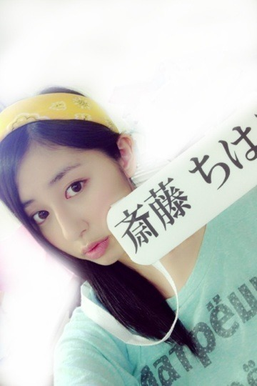
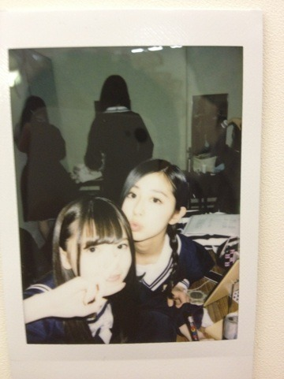
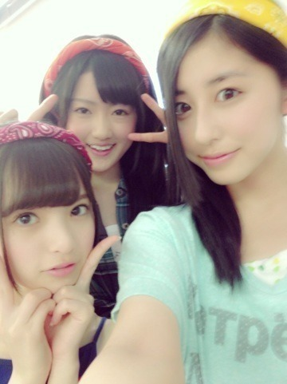

| 2013/05 04 Sat | 初日(´>∀<｀)ゝ |
ちはるーむへようこそ\( ^ω^ )/

斎藤ちは...笑

今日はプリンシパル公演初日。
来てくれた方々ありがとう\( ^ω^ )/
劇場にたくさんのファンの方が入るとやっぱり違う！
景色が！うつくしい！圧倒！
とっても嬉しいことっ！
今回は今和誠一に立候補したんですが、
誠一がすごい変わったキャラで笑
独特のファッションセンス笑
独特の喋り方笑
その全てがツボですヽ(・∀・)ノ笑
誠一さんとしても二幕に上がれるように
私も一生懸命自分を出して、個性を出して、成り切って、
頑張りたいと思ってます！
今回の結果は、ほんとに演技を見てくださったんだなって。
ガチなんだなって。
感じたので、より一層燃えます
 。
。
。
チャンスは、あるんだね。
二幕で、女優として、演じたい！
誠一さんだけじゃなく
色々な役にもできればチャレンジしたいと思ってます\( ˆoˆ )/いえす\( ˆoˆ )/
負けるな！自分に！
あ、無茶振りのラテンダンスは...
難しかったヽ(・∀・)ノヽ(・∀・)ノ笑

生駒に激写されたっ
すかにゃん。
あすかにゃん。
よってすかにゃん。
二期生がいよいよ今日から発表されましたねー！
若い子が多くて、同い年も2人いるんです\( ˆoˆ )/
今日の子は特に若かったなあー
飛鳥より年下の13歳！！
妹と一緒だよ！びっくり！！
でもしっかりしてそうでした♪
これからが楽しみ૮(⁎❛ ˚̫ ❛⁎)ა
明日からもお披露目があるので楽しみにしててくださいね！
いやあ～前髪切るか切らないか、半々だった！！
どうしよーう(*´･Д･)
悩むよー(*´･Д･)笑
じゃあプリンシパルが終わるまではこのままでいようかなっ！
それで終わってからゆっくりと考えよーっと\( ˆoˆ )/笑
みなさんの意見、参考にさせていただきますう。ありがとう。d=(^o^)=b
明日からも、頑張りますっ！！
見ていてください！！

すかにゃん、になちまd=(^o^)=b
お、なんだか今日は真面目な感じ。笑
ばいるんっ
るんるんっ
ちはるんっ
(´>∀<｀)ゝ
コメント(111)
2013/05/04 00:06